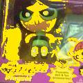
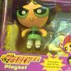
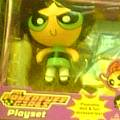
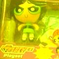

==>
==>
EPS画像をクリッピングすると、画像のBoundingBoxのパラメータだけが変更されます。従って、クリッピングで見えなくなった部分も、情報がなくなったわけではありません。
現在の Mac OS X (10.1.5) は EPS画像の表示をサポートしていません。
拡大・縮小した画像の作成
メニューの「画像操作/拡大・縮小...」をクリックするとパネルが表示され、これを使って大きさを変えた新しい画像を作成できます。
拡大・縮小率はスライダで指定し、「Bitmap→Bitmap」、「EPS→EPS」、「PDF/EPS→Bitmap」のいずれかのボタンで形式を指定します。ここで、Bitmapとは PDF/EPS以外の画像（ピクセルの集合で表される画像）です。
PDF/EPSファイルから新しい画像を作成する場合は、常に滑らかな画像が生成できますので、"DCT"、"Bilinear" のどちらの方式が指定されていても関係ありません。
ビットマップ画像を縮小する場合、DCTによる縮小が自動的に選択されるため、縮小率は段階的にしか選択できません。「自動選択」のチェックを外して Bilinear法を選ぶと任意の縮小率が設定できます。どちらの方法も、写真画像に対しては同様に良好な画質を得られますが、限定色画像や二値画像に対しては DCT縮小をお勧めします。
ビットマップ画像を拡大する場合は、Bilinear法を使って下さい。拡大率は任意に設定できます。
新しい画像は別のウィンドウに表示されます。
メニューの「特殊効果/減色(256色)」を使うと、256色のみから構成される画像を作成できます。
メニューの「特殊効果/減色...」をクリックすると、減色の方法やパラメータを指定できるパネルが表示されます。いくつかの方法が用意されていますが、通常は「ディザ + MCA(Median Cut Algorithm)」によってきれいな画像が得られます。「固定パレット」を使うと、Windowsや Macintosh に共通のパレットを使った減色が行えます。また、画像の各色の値を切り捨てて 4, 2, 1ビットにすることもできます。
新しいビットマップは別のウィンドウに表示されます。
画像をモノクロにしたい場合は、「輝度・モノクロ」の項を参照して下さい。
メニューの「特殊効果/輝度・モノクロ...」をクリックするとパネルが表示されます。輝度、コントラスト、ガンマ値の調節はパネル上のスライダで行います。
「輝度変更」ボタンを押すと、メインウィンドウに表示されている画像の輝度を変更した新しい画像が作成されます。
また、「モノクロ画像」ボタンを押すと、モノクロ画像が作成されます。モノクロ化の方式、階調はポップアップ・リストで指定しておきます。このモノクロ画像の輝度・コントラストにもスライダの設定が反映されます。ディザを使わず、ピクセルの値を切り捨てて 4, 2, 1ビットにするには、「減色」のメニューを使って下さい。
この操作は PDF/EPS形式の画像には適用できません。
メニューの「特殊効果/色彩強調...」をクリックするとパネルが表示されます。色彩の調節はパネル上のスライダで行います。彩度を強めると色が鮮やかになります。色相も調整できます。
「実行」ボタンを押すと、メインウィンドウに表示されている画像の色の濃さを変更した新しい画像が作成されます。
この操作は PDF/EPS形式の画像には適用できません。
メニューの「特殊効果/シャープ化・ぼかし...」をクリックするとパネルが表示されます。シャープ化、ぼかしの程度はパネルのスライダで設定できます。「シャープ化」または「ぼかし」ボタンを押すと、新しい画像が作成されます。
ドラッグによって領域が選択されていれば、その部分の内部（または外部）だけが強調、あるいはぼかされます。
この操作は PDF/EPS形式の画像には適用できません。
メニューの「特殊効果/色置換...」をクリックするとパネルが表示されます。置き換えられる色、置き換える色はパネル上のカラーウェルで設定でき、また、置き換えにおける色の比較の厳密さはスライダで設定できます。
ドラッグで領域が選択されていれば、その内部、あるいは外部だけについて置換を行えます。
「実行」ボタンを押すと、新しい画像が作成されます。
色置換の方法は４通り用意されています。
(1)
(2)
(3)
(4)
この操作は PDF/EPS形式の画像には適用できません。
メニューの「特殊効果/ノイズ・モザイク...」をクリックするとパネルが表示されます。「頻度」のスライダでノイズが加えられる画素の割合を、「大きさ」のスライダでノイズの大きさを指定できます。また、ドラッグで領域が選択されていれば、その内部だけについて操作を行います。
「ノイズ」ボタンを押すと、新しい画像が作成されます。
この操作は PDF/EPS形式の画像には適用できません。
メニューの「特殊効果/ノイズ・モザイク...」をクリックするとパネルが表示されます。「粗さ」のスライダでモザイクを構成するブロックの大きさを指定できます。
「モザイク」ボタンを押すと、新しい画像が作成されます。
この操作は PDF/EPS形式の画像には適用できません。
メニューの「特殊効果/ソフトフレーム...」をクリックするとパネルが表示されます。「フレーム形状」で形状を選択し、「フレーム幅」スライダでぼやけさせる幅を指定できます。さらに、パネル上のカラーウェルで、フレームの色を指定できます。
「実行」ボタンを押すと、新しい画像が作成されます。
この操作は PDF/EPS形式の画像には適用できません。
以下のような Aquaのボタン風のイメージを作ることもできます。 この効果は、比較的小さな画像にのみ効果的です。
メニューの「特殊効果/ポスタライズ...」をクリックするとパネルが表示されます。「領域分割」は分割の細かさを指定します。「色範囲調節」は色の違いによってさらに分割を細かくする程度を指定します。
この操作は PDF/EPS形式の画像には適用できません。
メニューの「特殊効果/エンボス・輪郭線...」をクリックするとパネルが表示されます。輪郭をどのくらい強調するかはパネルの上側のスライダで設定できます。「色濃度」のスライダを使うと画像に色を付けられます。ラジオボタンで、エンボス処理を行う方向を選択できます。「エンボス」ボタンを押すと、新しい画像が作成されます。
この操作は PDF/EPS形式の画像には適用できません。
メニューの「特殊効果/エンボス・輪郭線...」をクリックするとパネルが表示されます。どの程度の色の変化までを輪郭と見なすかを、パネルの上側のスライダで設定できます。大きな数値を指定するほど細かな線まで取り出します。「色濃度」のスライダを使うと画像に色を付けられます。「コントラスト」のスライダは、輪郭線の濃さを調節します。「輪郭線」ボタンを押すと、新しい画像が作成されます。
この操作は PDF/EPS形式の画像には適用できません。
この操作の後で上述のポスタライズを適用すると、面白い効果が得られます。